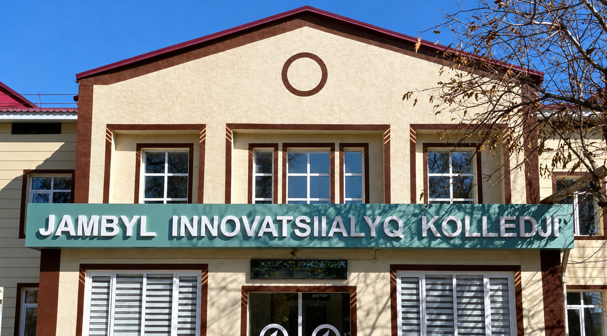
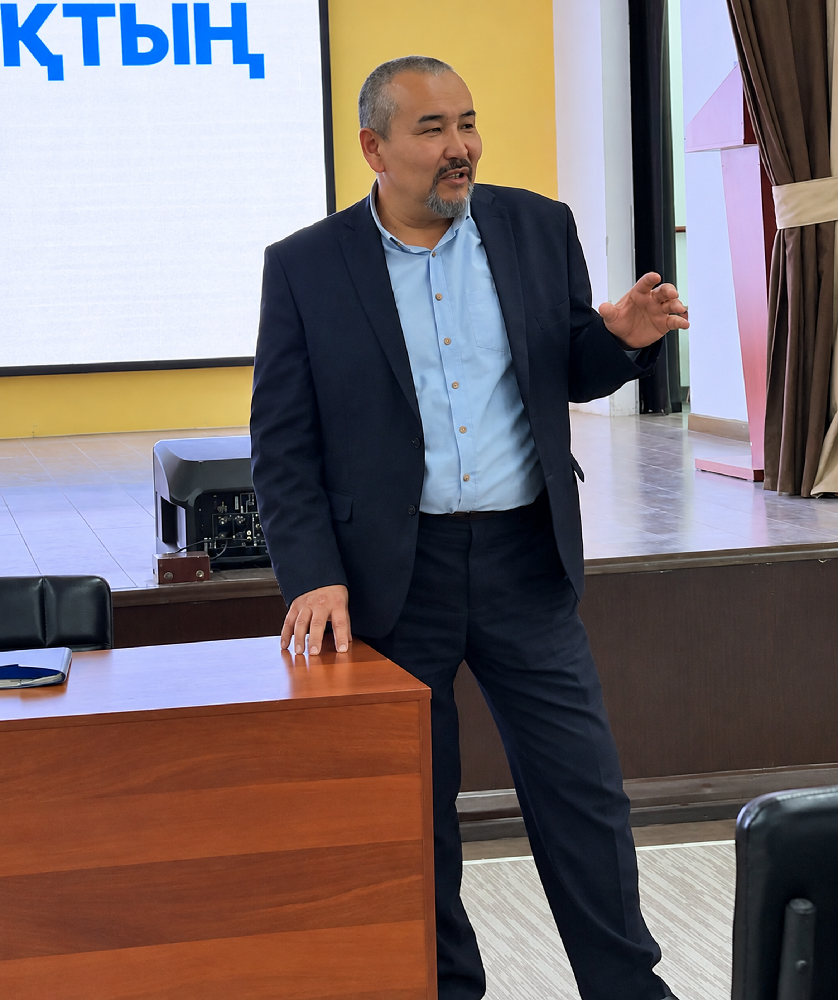

IT
- Web
- Mobile
- Design
Web, Mobile and Design are study directions. The published specialty list also names Technician and Technician-programmer as qualifications.

Jambyl Innovation High College is based in Taraz, Kazakhstan. Its two majors—IT and Accounting and Audit—bring together a range of study directions.
JIHC is in Taraz, Kazakhstan. Students can explore IT and Accounting and Audit.

Explore the subjects, then check the current options with the college.
Web, Mobile and Design are study directions. The published specialty list also names Technician and Technician-programmer as qualifications.
Accounting and Audit is a major at JIHC. Management and Marketing also appear in the published specialties list; their relationship to current study options is unconfirmed.
Read the admissions guide or contact the college with your questions.
See the published specialties list on EduPage ↗ .